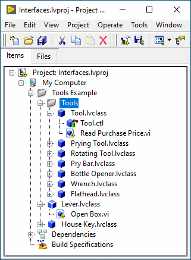
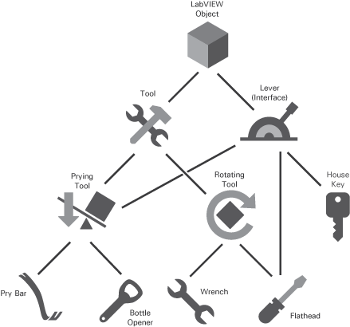

Open example�
Open example�
 Find related examples Open example�
Find related examples
Find related examples Open example�
Find related examplesIn LabVIEW, an interface can be thought of as a class without a private data control, but that small difference enables an interface to serve entirely different purposes in software architectures than classes. Specifically, interfaces enable a form of multiple inheritance.
An interface declares a role that an object can play without defining how to perform that role. By inheriting from an interface, a class declares that its objects fulfill that role, and the class becomes responsible for specifying how the behaviors are performed. When a class inherits from multiple interfaces, its objects can be passed into multiple software modules requiring different roles.
The following project includes the Tool class with several child classes of different tools. The project also includes the Lever interface. You can see that the Tools class has a control that defines the data in the class, whereas the Lever interface does not have a control because interfaces do not have private data. A class is represented by a solid cube (). An interface is represented by the faces of a cube (). Interfaces and classes use the same file extension .lvclass.

The following image illustrates the inheritance relationship among the Tool classes, the House Key class, and the Lever interface. The Tool class and the Lever interface both inherit from LabVIEW Object. In addition to having their own methods and methods of their respective parent classes, the Prying Tool class and the Flathead class also inherit from the Lever interface because they both can be used as a lever. They inherit the methods of the Lever interface. Since Lever is an interface rather than a class, this multiple inheritance is legal. The three unrelated classes (Prying Tool, Flathead, House Key) have a common ancestor (Lever) other than LabVIEW Object.

Use the following guidelines to provide the interface you create with a name that identifies the purpose of the interface:
Refer to the following projects for examples of using interfaces:
Open example�
Find related examples Open example�
Find related examples